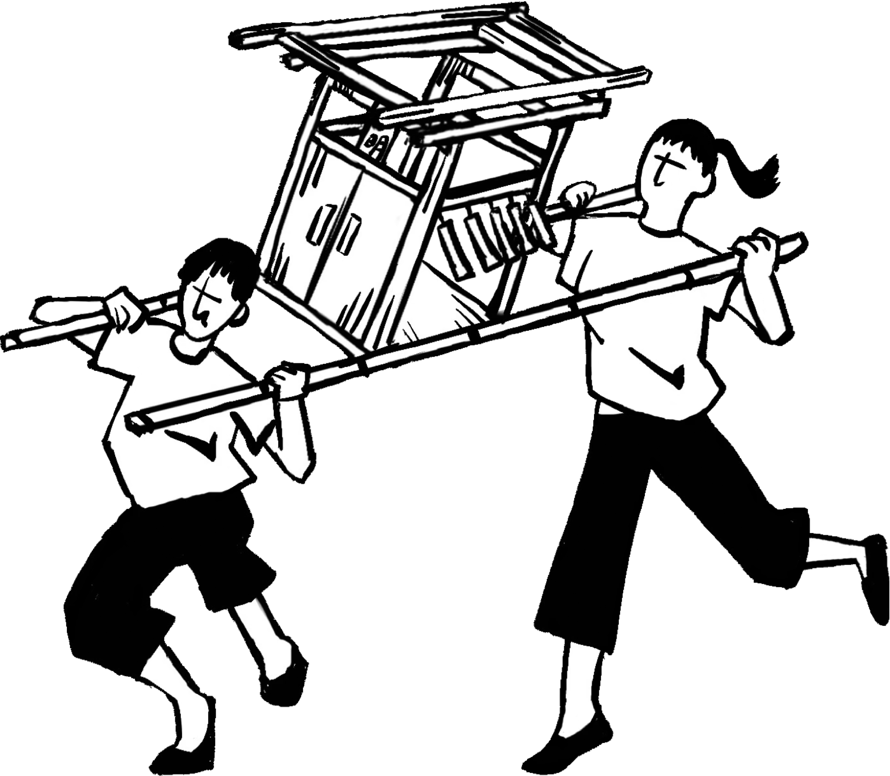
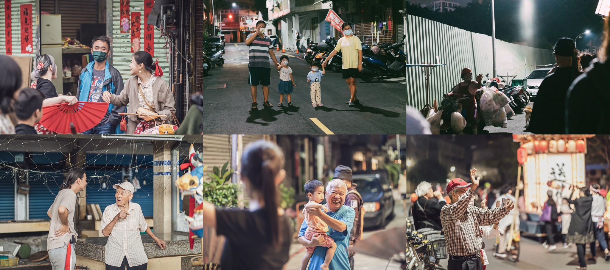

上街，對我們來說相當重要，在每個節祭之中，無論呈現了什麼、無論核心概念為何，我們必定上街。
聽過這樣子的描述：昔日，跑江湖的藝人會在廟埕或樹下說書、唸歌仔。雖然是為了吸引客人、為了賣藥，但可以在街頭上聽見藝術、可以與之同唱，實在是相當美好的事情。街，是一個開放的空間，反之，美術館、劇院或電影院是封閉的，在隔絕於現實的空間裡，創作者創造了一個世界，觀眾被動地進入創作者的世界裡，無論是美術館中禁止超越的線，或者廳院中的舞台，都使觀眾永遠都待在觀者的那方。
在城市之中，人們看似接收到相當多的藝術，但要說這些觀者真的會些什麼嗎？會唱歌演戲、會作詩作畫嗎？會把藝術融入自身的生活嗎？還是離開美術館之後，繼續過著無藝術參與的生活？當代的人們對於藝術僅有欣賞卻無法真正掌握，於是，透過祭典，我們想要主動去創造一些什麼。

在祭典的藝術裡面，雖然有些基本的規則，但主客的關係是可以改變的，總有個預想是人們可以一起進來做些什麼，像是扛轎、打鑼鼓等等。祭典藝術因為走在人們生活的地方，而更靠近人們。祭典雖然也會創造一個世界，不過其創造的世界與真實緊密地連結在一起，我們走在街上時，不可能不注意到別人的注視與好奇，不可能無視別人的疑問。
我們經過鄰里社區，我們直面城市的人們，上街，實在地區別了祭典藝術與其他的藝術，在開放的街道上，人們無論專業與否、身分為何，皆可以成為美的元素。如果你在上元的晚上來到五福路，你可以看見燈車、花轎與歌舞戲劇，你可以旁觀也可以選擇加入歡慶……我們這群辦祭典的人們，只是跟大部分普通的城市人一樣，多半沒有背景，也不是某領域的專業，我們僅是對藝術抱持著興趣，對藝術有一些執著，對美的另一種可能帶有想像。
另外，也像是蔣勳在《美的覺醒》裡面說的吧：
「經由別人的陶醉，你看到了夕陽，經由別人的歡唱，你看到了花的開放。其實，美是可以感染的。」
如果藝術放置在美術館裡頭，美只與一個又一個的觀者產生意義，是點到點的關係，但是在祭典中，藝術與人們是一張網，人之間的距離可以透過藝術連結在一起，不再只是人與藝術品之間一對一的關係，所以你看見的燈車、花轎與歌舞戲劇不只是作品，你看見的還是別人的笑容與感動，當你意識到自己也透過別人而微笑、而感動，你便成為了祭典藝術之中不可或缺的一部分。
於是，我們把藝術搬上街道，奪回美的主導。讓美不再只是藝術家說的算，藝術，可以不是只屬於私人、美術館或廳院，藝術可以存在於日常的風景之中，在店家前，在馬路旁，在不分野的百姓手中綻放。
